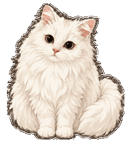

Cheese
A fluffy ginger coat, a cream muzzle, and a slightly serious expression.
Install Cheese in Codex ↗Fluffy companions for your Codex desktop. Choose a cat below to open the app's pet installation screen.
A fluffy ginger coat, a cream muzzle, and a slightly serious expression.
Install Cheese in Codex ↗
Long white fur, round eyes, and a tiny pink nose.
Install Cream in Codex ↗The Codex desktop app must already be installed and support pet installation links. Each button installs one pet. No separate installer script is needed.
If nothing opens, try this page in Safari or Chrome on the Mac or PC where Codex is installed.